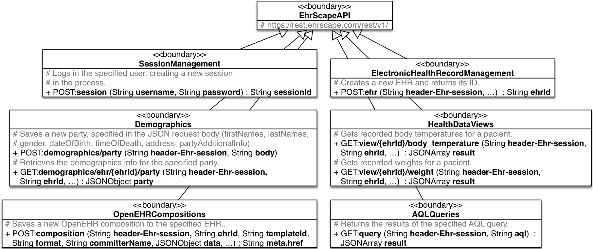
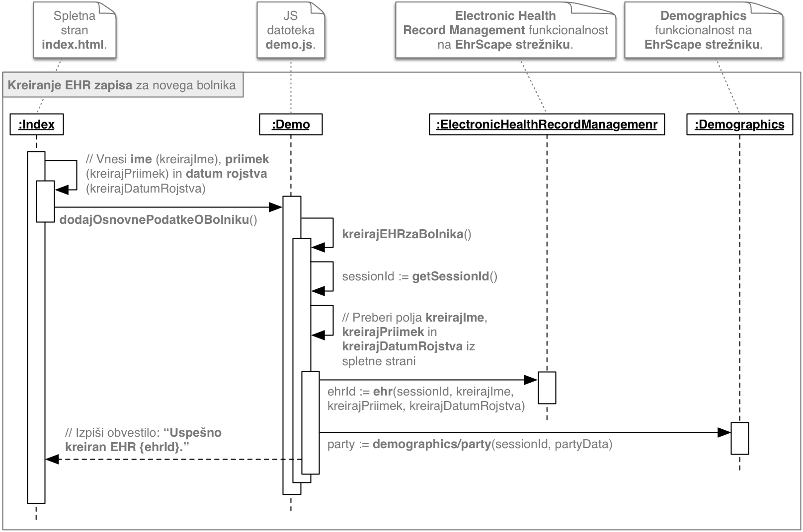

Naš enostavni primer je sestavljen iz 4 primerov uporabe (PU), ki so prikazani na diagramu primerov uporabe. Podprli smo naslednji skupini funkcionalnosti:
Če pogledamo načrt informacijske rešitve (ki ga bodo morali tudi študenti pripraviti pri 4. DN), je eden izmed pomembnejših diagramov VOPC (razredni diagram sodelujočih razredov oz. angl. View of Participating Classes).
Na globalnem VOPC diagramu prikažemo celotno strukturo demo aplikacije, ki je sestavljena iz naslednjih osrednjih komponent:
Podrobni VOPC diagram za EhrScape API pa podrobno predstavlja uporabljene funkcionalnosti, ki jih ponuja EhrScape strežnik. Gre za neposredno sliko dokumentacije API vmesnika, ki smo si ga pogledali s pomočjo orodja API Explorer. Prikazuje funkcionalnosti (način dostopa: GET ali POST), parametre in podatkovni tip odgovora.
Če želimo programerju predstaviti dovolj informacij za razvoj željene funkcionalnosti, mu moramo, polega diagrama primerov uporabe in VOPC diagrama, pripraviti tudi diagram zaporedja. V nadaljevanju je pripravljen diagram zaporeda, ki predstavlja realizacijo osnovnega toka dogodkov primera uporabe "Kreiranje EHR zapisa za novega bolnika".
